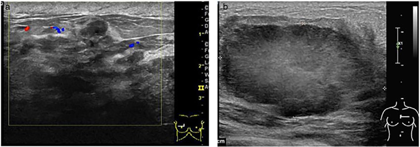

Breast Cancer

CAUSES
However, research indicates that are several risk factors that may increase your chances of developing breast cancer. These include:
- Age. Being 55 or older increases your risk for breast cancer.
-
Sex. Women are much more likely to develop breast cancer than men.
-
Family history and genetics. If you have parents, siblings, children or other close relatives who’ve been diagnosed with breast cancer, you’re more likely to develop the disease at some point in your life. About 5% to 10% of breast cancers are due to single abnormal genes that are passed down from parents to children, and that can be discovered by genetic testing.
-
Smoking. Tobacco use has been linked to many different types of cancer, including breast cancer.
-
Alcohol use. Research indicates that drinking alcohol can increase your risk for certain types of breast cancer.
-
Obesity. Having obesity can increase your risk of breast cancer and breast cancer recurrence.
-
Radiation exposure. If you’ve had prior radiation therapy — especially to your head, neck or chest — you’re more likely to develop breast cancer.
-
Hormone replacement therapy. People who use hormone replacement therapy (HRT) have a higher risk of being diagnosed with breast cancer.
SYMPTOMS
Breast cancer symptoms can vary for each person. Possible signs of breast cancer include:
- A change in the size, shape or contour of your breast.
-
A mass or lump, which may feel as small as a pea.
-
A lump or thickening in or near your breast or in your underarm that persists through your menstrual cycle.
-
A change in the look or feel of your skin on your breast or nipple (dimpled, puckered, scaly or inflamed).
-
Redness of your skin on your breast or nipple.
An area that’s distinctly different from any other area on either breast.
-
A marble-like hardened area under your skin.
A blood-stained or clear fluid discharge from your nipple.
DIAGNOSIS
These tests may include:
- Mammogram. These special X-ray images can detect changes or abnormal growths in your breast. A mammogram is commonly used in breast cancer prevention.
-
Ultrasonography. This test uses sound waves to take pictures of the tissues inside of your breast. It’s used to help diagnose breast lumps or abnormalities.
-
Positron emission tomography (PET) scanning: A PET scan uses special dyes to highlight suspicious areas. During this test, your healthcare provider injects a special dye into your veins and takes images with the scanner.
-
Magnetic resonance imaging (MRI): This test uses magnets and radio waves to produce clear, detailed images of the structures inside of your breast.
TREATMENTS
There are several breast cancer treatment options, including surgery, chemotherapy, radiation therapy, hormone therapy, immunotherapy and targeted drug therapy